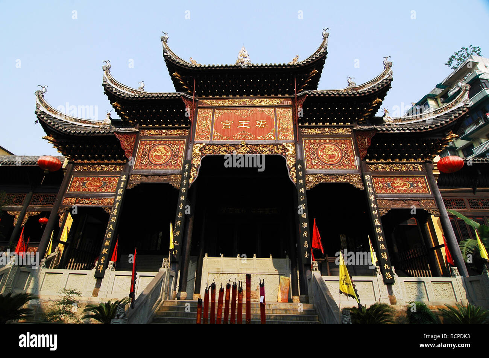
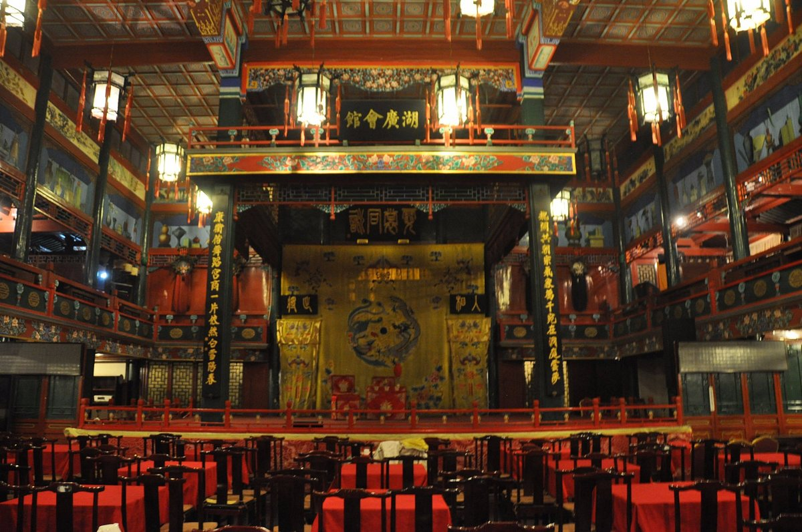
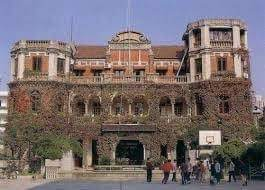
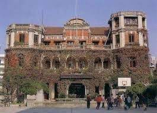
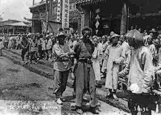
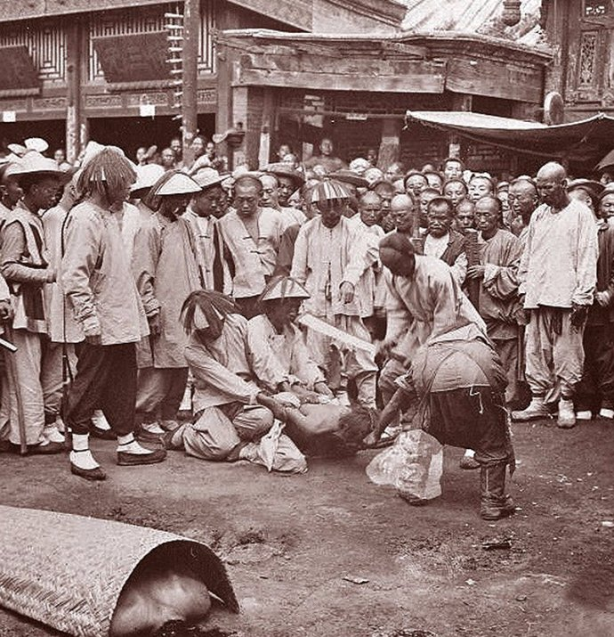

Huguang Huiguan Opera House
 The Huguang Huiguan Opera House in Beijing, China is one of the most haunted places in the country.
It is said to be haunted by the spirits of people who were buried in an ancient graveyard that was once on the site of the building.
The opera house was built in 1807 as a home for the poor. However, it is said that during construction,
workers unearthed many human bones. The bones were reburied, but the spirits of the dead are said to have remained.
There are many stories of paranormal activity at the opera house. Some people have reported hearing screams
and moans coming from the building, even when it is empty. Others have seen shadowy figures moving around in the halls.
There have also been reports of objects being thrown and doors slamming shut for no reason.
One of the most famous stories about the Huguang Huiguan Opera House is the story of the screaming specter.
Legend has it that if you throw a stone into the courtyard of the opera house, you will hear a loud voice scolding you.
However, when you look around, there will be no one there.
Another story tells of a janitor who was so disfigured by leprosy that even the dead couldn't bear to see him.
He is said to haunt the opera house to this day, and some people claim to have seen him walking around the building at night.
The Huguang Huiguan Opera House is now a museum and a venue for occasional performances. However,
many people are still afraid to visit the building, due to its reputation for being haunted.
Have you visited Huguang Huiguan Opera House before ?? Yes
The Forbidden City, Beijing

The Forbidden City in Beijing, China, is a vast imperial palace complex with a rich history, and it is said to have its share of ghostly tales.
One of the most famous stories involves the ghost of a Ming Dynasty concubine named Concubine Yu.
Concubine Yu fell deeply in love with the Emperor during her time in the Forbidden City.
However, her love remained unrequited, and she eventually died under mysterious circumstances.
Some say she was murdered, while others believe she took her own life out of despair.
Her restless spirit is said to haunt the palace, particularly the area known as the "Palace of Eternal Spring."
There have been claims of hearing her weeping and witnessing her apparition wandering the halls.
Some even say that her ghostly presence brings bad luck to anyone who encounters her.
These ghostly tales add an air of mystique to the already intriguing history of the Forbidden City,
making it a place where legends and history
Have you visited The Forbidden City, Beijing before ?? Yes
The Qiu Mansion
 

The Qiu Mansion, located in Shanghai, is rumored to be haunted due to a tragic historical event.
It was once the residence of a wealthy businessman named Qiu, who was known for his opulent
lifestyle during the early 20th century. The mansion's eerie reputation stems from a disturbing
incident when Qiu's wife discovered his affair with a servant.
In a fit of jealousy and rage, she murdered both her husband and the servant before taking her own life.
The gruesome triple murder-suicide left a dark stain on the mansion's history, and it is said that
the vengeful spirits of the victims still linger within its walls.
Witnesses have reported hearing ghostly cries and footsteps, and some claim to have seen apparitions
of the ill-fated trio.The Qiu Mansion's tragic past and the mysterious occurrences
surrounding it have cemented its reputation as one of Shanghai's most haunted locations.
Have you visited The Qiu Mansion before ?? Yes
Caishikou Execution Grounds, Beijing
 
The Caishikou Execution Grounds in Beijing, China, have a dark and haunted history dating back to imperial times.
It is said that the site was once a place of public executions, where prisoners met gruesome ends.
The haunting tales stem from the suffering endured by countless individuals who met their demise here.
Legend has it that the lingering spirits of those who met violent and unjust deaths continue to haunt the grounds.
Visitors have reported eerie apparitions, mysterious sounds, and an overwhelming sense of dread.
Some claim to have witnessed spectral figures, shackled souls, and mournful cries echoing in the dead of night.
While the exact historical records are scarce, the Caishikou Execution Grounds serve as a chilling reminder of a grim past,
and many believe that the tormented spirits of the executed still wander the area, seeking solace or retribution for
their unjust fates, making it a place with a haunting and unsettling aura.
Have you visited Caishikou Execution Grounds, Beijing before ?? Yes